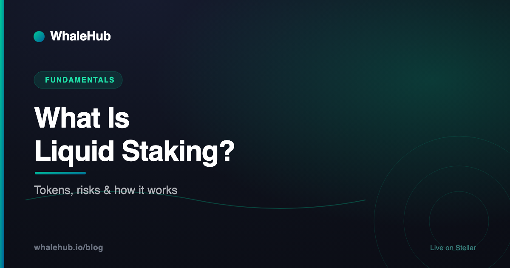

What Is Liquid Staking? Tokens, Risks & How It Works

Staking has always come with a catch: to earn, you had to lock your capital away and give up the ability to do anything else with it. Liquid staking is the answer to that trade-off. You stake, you keep earning, and you also receive a transferable receipt token that represents the position — so your capital is working in two places at once. This guide explains how that works, what the receipt tokens actually are, where the risks hide, and how the idea translates to Stellar.
What is liquid staking?
Liquid staking is a way to stake an asset while still holding something tradable that represents the position. Instead of your capital being locked and inert, a protocol stakes on your behalf and issues you a receipt token you can hold, transfer, or use elsewhere in DeFi while the underlying stake keeps earning.
The problem it solves is old and simple. Staking is fundamentally a commitment: you agree to tie up capital in exchange for rewards, and the network — or the protocol — needs that commitment to be real. Historically the only way to make it real was to make the capital unmovable. Lock it, and you can't sell it, can't post it as collateral, can't respond to anything happening in the market.
Liquid staking splits the position in two. The stake itself stays committed and keeps doing its job. The claim on that stake becomes a token in your wallet. Those are different things, and once you separate them, the capital can be committed and mobile simultaneously.
That insight — represent an illiquid position with a liquid token — turned out to be one of the most productive ideas in DeFi, and it now underpins a large share of the assets staked across major networks.
- What it is — staking that returns a tradable receipt instead of locking you out.
- What you get — a liquid staking token (LST) representing your position.
- Why it matters — the same capital can earn staking rewards and be used elsewhere.
- What it costs — an extra smart-contract layer, and a receipt whose market price can move.
How it works, step by step
You deposit an asset into a liquid staking protocol. The protocol stakes those assets according to its strategy, issues you a receipt token representing your share of the pool, and accrues rewards into that pool over time. When you want out, you either redeem through the protocol or simply sell the receipt token on the open market.
Four steps, in order:
1 — Deposit
You send the underlying asset to the protocol's contract. From this point the protocol, not you, manages the staking mechanics — choosing validators, handling delegation, claiming rewards, dealing with whatever operational complexity the network imposes.
2 — Receipt issued
The contract mints you a receipt token. The amount you receive depends on the pool's current exchange rate: as rewards accumulate in the pool, each receipt token represents progressively more of the underlying asset, so later depositors receive proportionally fewer tokens for the same deposit.
3 — Rewards accrue
The protocol collects staking rewards and adds them to the pool. Crucially, you do nothing. Your token balance may stay constant while its backing grows, or the protocol may rebase your balance upward — the two designs are covered in the next section.
4 — Exit
Two doors out. Redeem through the protocol, which unstakes the underlying and may involve a waiting period the network requires; or sell the receipt token to someone else on a secondary market, which is instant but executes at whatever price the market offers. That second door is the entire point of the word "liquid."
Liquid staking tokens explained
A liquid staking token, or LST, is the receipt a protocol issues on deposit. It is a normal transferable token whose value derives from the staked position behind it. Some LSTs accrue value by rising against the underlying asset over time; others rebase, so your balance grows while each token stays roughly constant in value.
Two designs dominate, and the difference matters for how you read your balance:
| Design | What changes | What it looks like | Trade-off |
|---|---|---|---|
| Value-accruing | Price per token | Balance stays at 100 tokens; each is worth more of the underlying over time | Cleaner for DeFi integrations and accounting |
| Rebasing | Token balance | Balance grows from 100 to 105; each token tracks the underlying | Intuitive to read, but breaks some DeFi contracts |
| Floating receipt | Market price | The token trades freely; its price reflects supply, demand, and the position behind it | Maximum flexibility, no fixed redemption relationship |
A critical point that trips up newcomers: an LST's market price is set by the market, not by decree. Whatever relationship a protocol describes between the receipt and the underlying, the price at which you can actually sell the receipt is whatever a buyer will pay for it at that moment. During calm periods that price usually tracks the underlying position closely. During stress — a rush for the exits, an exit queue backing up, bad news about the protocol — it can trade at a meaningful discount.
That gap isn't a malfunction. It's the market pricing in the time and uncertainty of getting back to the underlying asset, and it's a real cost borne by anyone who needs to exit right now rather than wait.
What it actually unlocks
Liquid staking makes staked capital composable. The receipt token can be used as collateral, supplied to liquidity pools, traded for immediate exit, or deposited into other yield strategies — so a single pool of capital can earn staking rewards and participate in the rest of DeFi at the same time.
The concrete benefits, roughly in order of how much people actually use them:
- Instant exit. Networks with long unbonding periods make locked staking a genuine commitment. An LST lets you leave immediately by selling, at the cost of accepting the market's price.
- Collateral. Lending protocols can accept LSTs, letting you borrow against a staked position without unstaking it. Our guide to Blend, Stellar's lending protocol, covers how collateral works in that context.
- Stacked yield. Supply the LST to a liquidity pool and you earn trading fees on top of the staking rewards already accruing underneath.
- No minimums, no operations. Some networks require large minimum stakes or running infrastructure. Pooled liquid staking removes both barriers.
- Divisibility. A staked position is lumpy; a token is not. You can sell a third of your exposure without touching the rest.
This composability is also where the systemic risk lives, which is the natural next topic.
The risks nobody puts on the landing page
The main risks are smart-contract failure in the staking protocol, market risk on the receipt token, exit-queue and liquidity risk when many holders leave at once, penalties on the underlying stake where the network imposes them, and concentration risk when a single protocol controls a large share of a network's stake.
Each deserves a sentence of its own:
- Smart-contract risk. You are adding a layer of code between yourself and your assets. Audits reduce this risk; they do not eliminate it. This is the price of admission and it is not negotiable.
- Market risk on the receipt. As covered above, the receipt token trades at whatever the market pays. If you need to exit during a panic, you may realise materially less than the underlying position is nominally worth.
- Liquidity and exit queues. The "instant exit" only holds while there's depth on the other side of the trade. Thin secondary liquidity plus a crowded protocol redemption queue is the scenario that turns a paper discount into a realised one.
- Penalties on the underlying. On networks that slash misbehaving validators, those penalties flow through to everyone in the pool. You've delegated validator selection to the protocol, so you've inherited its judgement.
- Concentration risk. When one liquid staking protocol accumulates a large fraction of a network's total stake, that becomes a governance and security concern for the network as a whole — and an uncomfortable single point of failure for everyone holding its token.
- Leverage loops. Because LSTs are good collateral, it's easy to borrow against one, buy more, and repeat. This amplifies returns and amplifies liquidation risk just as efficiently.
Liquid staking on Stellar
Stellar has no native proof-of-stake rewards, because it reaches consensus through the Stellar Consensus Protocol rather than by staking. Yield on Stellar therefore comes from the application layer — liquidity provision, lending, and staking ecosystem tokens such as AQUA — and the liquid staking pattern is applied to those positions instead.
This surprises people arriving from Ethereum or Solana, so it's worth stating plainly: you cannot "stake XLM" for protocol rewards the way you can stake ETH or SOL. Stellar's validators don't put up capital and don't get paid inflation for participating; the network's security model simply doesn't work that way. Anyone advertising native XLM staking yield is describing something else — usually a lending product or a liquidity position — and it's worth knowing which.
What Stellar does have is a rich application layer. Aquarius runs the AMM and directs AQUA emissions to liquidity pools chosen by ICE voters. Blend provides money markets. Soroban makes all of it programmable. The yield is real; it just originates from activity rather than from inflation.
Into that context, WhaleHub applies the liquid staking pattern to AQUA. You stake AQUA with the protocol and receive BLUB, a liquid receipt token. The protocol aggregates the resulting ICE voting power across all stakers — which is what makes a small position count for something — and auto-compounds the Aquarius rewards it earns.
Two honest clarifications about BLUB, in the spirit of the risks section above. First, BLUB is a floating token, not a pegged one. Its price is set by the market, and it is not a promise of redemption at a fixed rate against AQUA. Second, the rewards it represents are variable: Aquarius emissions depend on ICE votes and on which pools are whitelisted for rewards at any given time, so yields move and can fall. Neither of those makes the design worse than alternatives — but both are things you should understand before participating rather than after.
How to evaluate a liquid staking protocol
Check who controls the contracts and whether they can be upgraded, how deep the secondary liquidity for the receipt token is, what the redemption path and waiting period actually look like, how fees are charged, and what the receipt token's price history shows during past stress.
A short checklist that generalises across networks:
- Contract control. Immutable, multisig-governed, or upgradeable by one key? This single answer tells you most of what you need to know about trust assumptions.
- Secondary depth. How much of the receipt token can actually be sold before the price moves significantly? "Liquid" is a claim to be verified, not assumed.
- The redemption path. Can you redeem directly? How long does it take? Is there a queue, and what happened to that queue the last time markets fell?
- Fee structure. A performance fee on rewards is standard. Look for whether fees are charged on principal, and whether they can be changed unilaterally.
- Behaviour under stress. Look at the receipt token's price during the worst week it has seen. That's your realistic estimate of exit cost in a bad scenario — not the current price.
Liquid staking is a genuinely elegant idea: separate the commitment from the claim, and capital that used to sit idle becomes productive twice over. The cost is an extra layer of code and a receipt token that answers to the market rather than to a formula. Understand both halves of that trade, verify the liquidity claim rather than taking it on faith, and it becomes a tool you can use deliberately instead of a black box you hope works.
Frequently asked questions
What is liquid staking?
Liquid staking is a way to stake an asset while still holding something tradable that represents the position. Instead of your capital being locked and inert, a protocol stakes on your behalf and issues you a receipt token you can hold, transfer, or use elsewhere in DeFi while the underlying stake keeps earning.
What is a liquid staking token?
A liquid staking token, or LST, is the receipt a liquid staking protocol issues when you deposit. It is a normal transferable token whose value derives from the staked position behind it. Some LSTs accrue value by slowly rising against the underlying asset, while others rebase so that your token balance grows over time.
What are the risks of liquid staking?
The main risks are smart-contract failure in the staking protocol, market risk on the receipt token, which can trade below the value of the assets behind it during stress, exit-queue and liquidity risk when many people want out at once, penalties or slashing on the underlying stake where the network imposes them, and concentration risk when one protocol controls a large share of a network's stake.
Is liquid staking better than regular staking?
It is a different trade, not a strictly better one. Liquid staking gives you flexibility and composability that locked staking cannot, but it adds a layer of smart-contract risk and introduces a receipt token whose market price can move independently of the assets behind it. Locked staking is simpler and has fewer moving parts.
Can you stake XLM on Stellar?
Not in the proof-of-stake sense. Stellar reaches consensus through the Stellar Consensus Protocol rather than by staking, so there is no native protocol reward for locking up XLM. Yield on Stellar comes from application-layer activity instead — providing liquidity on AMMs, lending, and staking ecosystem tokens such as AQUA for Aquarius rewards.
WhaleHub is a yield-optimization protocol on Stellar. We stake AQUA, aggregate ICE voting power, and auto-compound Aquarius rewards for stakers. This series explains the Stellar DeFi stack — protocols, tokens, and strategies — in plain English.
Read more


Put the pattern to work on Stellar
Stake AQUA, receive BLUB as your liquid receipt token, and let WhaleHub aggregate ICE and auto-compound Aquarius rewards.
Launch the appThis article is for educational and informational purposes only and is general information, not financial or investment advice. Descriptions of third-party protocols reflect our understanding at the time of writing and may change. BLUB is a floating-value token whose price is set by the market; it is not a pegged instrument and carries no promise of redemption at any fixed rate. Rewards described here are variable and can fall to zero. DeFi involves significant risk, including smart-contract failure and the potential total loss of capital. Do your own research and consult a qualified professional before making decisions.